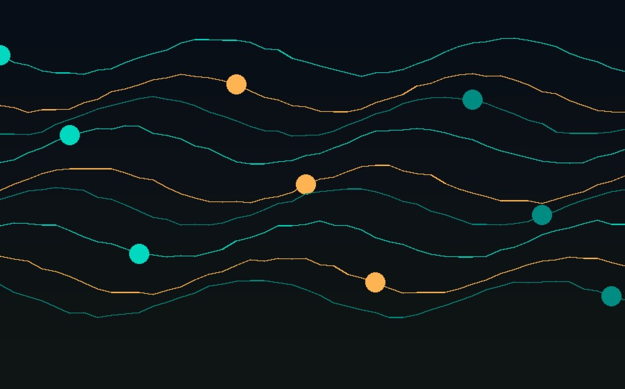

Back to Projects
Telecommunications / Fiber Optics
View Document
Fiber Optic Communication & Splicing

Overview
A practical telecommunications project focused on fiber optic communication, installation concepts and fiber splicing — core skills for anyone working with modern optical transmission infrastructure.
Areas Covered
- Fundamentals of how optical fiber carries signals as light pulses over long distances with low loss.
- Installation concepts for running and terminating fiber optic cable in real environments.
- Hands-on fiber splicing technique, joining fiber strands to maintain signal integrity.
- Approaches to identifying and troubleshooting faults in a fiber optic link.
Relevance
Fiber optics underpins most modern high-capacity telecommunications infrastructure, from backbone networks to last-mile connectivity. Practical exposure to installation and splicing builds a foundation for supporting and maintaining this infrastructure in the field.
Technologies Used
Fiber OpticsFiber SplicingOptical CommunicationNetwork Infrastructure